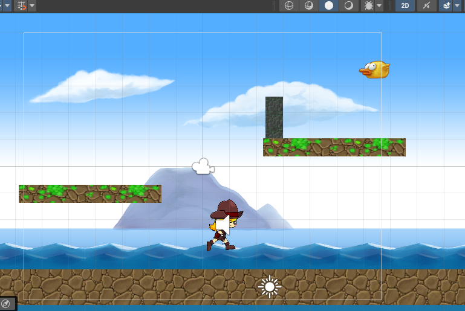
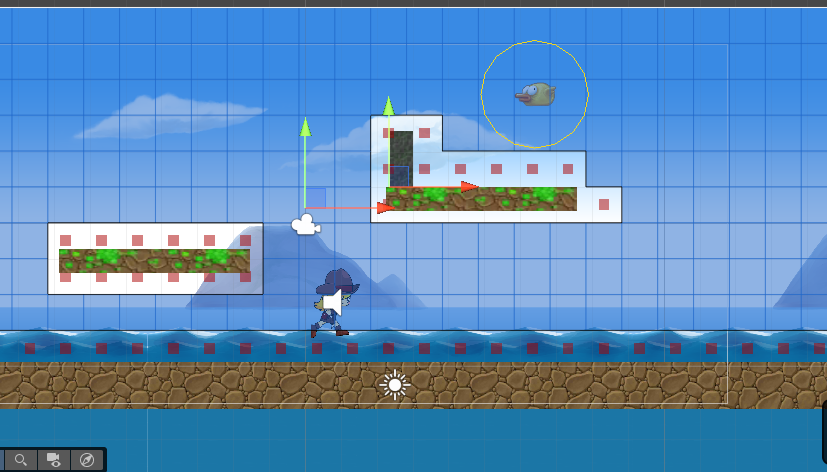

2.3 Pathfinding 2D amb físiques
En aquesta secció, implementarem el pathfinding 2D utilitzant el paquet A* Pathfinding Project vist anteriorment, però aquesta vegada aprofitant les capacitats de les físiques 2D de Unity per a la detecció d'obstacles.
Configuració del projecte
Descarregaa el projecte de Github des de aquest enllaç i obriu-lo amb Unity.

Al igual que en el projecte anterior, hem d'instalar el paquet A* Pathfinding Project. Si no ho heu fet encara, seguiu els passos descrits en la secció anterior per a instal·lar-lo.
Seguiment sense pathfinding
Sense utilitzar algorismes de pathfinding, podem fer que un objecte seguisca a un altre.
Obre l'script Enemigo.cs i afegeix la següent propietat pública per a l'objectiu (Personaje):
1 | |
En el mètode Update(), afegeix el següent codi per a moure l'enemic cap al jugador:
1 2 3 4 5 | |
Info
El mètode Vector3.Lerp() permet interpolar entre dues posicions. En aquest cas, mou l'enemic cap a la posició del jugador a una velocitat determinada per la variable speed.
Posa en marxa el joc. Veurà que, encara que l'enemic va cap al jugador, no pot evitar els obstacles i es queda atrapat.
Afegir component de pathfinding
Anem a afegir el component de pathfinding al nostre escenari igual que en el cas anterior.Primer creem un GameObject buit. Nomeneu-lo "A*".
Seleccioneu el GameObject "A*" i feu click a "Add Component". Cerqueu "Pathfinder" i afegiu-lo.
Dins del component Pathfinder, feu click a Graphs -> Add New Graph -> Grid Graph.
Dins de les propietats del Grid Graph, ajusteu els següents paràmetres:
- Grid Graph 2D: activat
Ara apareixerà una graella sobre el vostre escenari. Ajusteu la mida i la posició de la graella perquè cobreixi tota l'àrea on voleu que els personatges es puguen moure, usant l'eina scale.
Configureu també les següents opcions:
- Connections: Eight. Això farà que cada quadrat de la graella estigui connectat només amb els seus 8 veïns (dalt, baix, esquerra, dreta i les 4 diagonals).
- Cut Corners: activat. Això permetrà que els personatges puguin moure's en diagonal al voltant dels obstacles.
- Use 2D Physics: activat. Això farà que el pathfinding utilitzi la física 2D per detectar obstacles.
- Collider type: Sphere.
- Diameter: 1.5. Això defineix la mida de l'esfera que s'utilitzarà per detectar col·lisions amb obstacles.
- Height testing: desactivat. Això desactiva la comprovació d'altura, ja que estem treballant en 2D.
Un cop fet això, feu click a "Scan" per generar el graf de navegació. Us haurà generat una graella blava sobre l'escenari amb els possibles camins.
Ara, seleccioneu el pardal i afegiu-li els components Seeker i AIPath.
En el component AIPath, configureu els següents paràmetres:
- Orientation: Y-axis forward (for 2D games).
- Max Speed: 5.
- Enable rotation: desactivat.
Ara afegiu el component "AI Destination Setter" i afegiu-lo. Afegiu el gameobject Pacman al camp Target del component.
En l'script Enemigo.cs, elimineu el codi del mètode Update() que havíem afegit anteriorment per a seguir al jugador. Poseu en marxa el joc. Veureu que el comportament del pardal és el mateix que abans. Això és perquè no hem indicat la capa d'obstacles als components de pathfinding.
Seleccioneu les plataformes, els murs i el sòl i assegureu-vos que tenen el Layer assignat a Obstacle. Ara en el component Grid Graph, configureu els següents paràmetres addicionals:
- Obstacle layer mask: Obstacle.
Torna a fer click a "Scan" per actualitzar el graf de navegació amb la nova capa d'obstacles. Ajusta la graella si cal. Comprova que el pardal ara evita els obstacles quan segueix al personatge.

Pathfinding 2D amb físiques
En aquest apartat usarem el nostre propi codi per a implementar el pathfinding 2D amb físiques.
Fes una còpia de l'enemic i desactiva l'Enemic original. Treballarem amb la còpia. Deslliga la còpia del prefab original: selecciona la còpia i fes click dret -> Unpack Prefab Completely.
En la còpia, elimina els components AIPath i AI Destination Setter, però mentén el component Seeker.
Posa en marxa el joc. El pardal hauria de estar estàtic perquè no té cap codi per a moure's ni gravetat.
Obre l'script Enemigo.cs i afegeix la següent línia a la part superior per a incloure el namespace del paquet A* Pathfinding Project:
1 | |
Després crearem una propietat pública per al pròxim punt de cerca (distància a partir de la qual cercarà el pròxim punt), dins de la classe Enemigo:
1 | |
També necessitarem propietats privades per al camí (Path), per al punt actual del camí i un booleà per saber si hem arribat al final del camí. També necessitarem una referència al component Seeker i al Rigidbody2D per a moure l'enemic:
1 2 3 4 5 | |
A continuació, inicialitzarem la referència al Seeker dins del mètode Start() i començarem a cercar el camí cap a l'objectiu usant el mètode StartPath() on indiquem la posició inicial, la posició final i la funció que es cridarà quan s'acabe de calcular el camí:
1 2 3 4 5 6 | |
Ara creem el mètode OnPathComplete() que s'encarregarà de rebre el camí calculat i assignar-lo a la propietat path. També reiniciarem l'índex del punt actual del camí:
1 2 3 4 5 6 7 8 9 10 11 12 13 14 15 | |
En l'inspector de Unity, assigna el Personatge a la propietat Target del pardal. Assigna també una velocitat de 100. Posa en marxa el joc i comprova que es dibuixa el camí des del pardal fins al personatge. Però de moment aquest no s'actualitza.
Per a que es moga, hem de treballar en el mètode Update(). Afegim el següent codi per a moure l'enemic al llarg del camí:
1 2 3 4 | |
SI no tenim un camí, no seguim endavant.
1 2 3 4 5 6 7 8 9 | |
Aquest codi serveix per a comprovar si hem arribat al final del camí. Si l'índex del punt actual és major o igual que el nombre de punts en el camí, hem arribat al final. Marquem reachedEndOfPath com a cert i sortim del mètode.
1 2 3 4 | |
Ací estem calculant la direcció cap al següent punt del camí i aplicant una força al Rigidbody2D per a moure'l en aquesta direcció.
1 2 3 4 5 | |
Per últim, comprovem si hem arribat prou a prop del punt actual del camí. Si la distància és menor que nextWaypointDistance, incrementem l'índex del punt actual per a passar al següent punt del camí.
Al posar en marxa el joc, el pardal hauria de moure's cap al personatge. Però no frena ni actualitza el camí quan canvia la posició del personatge. Per a solicionar el tema del moviment, canvia el valor de Linear Damping del Rigidbody2D a 1 o 2. Prova també amb diversos valors per a la velocitat.
Per a actualitzar el camí, hem de cridar el mètode StartPath() del seeker periòdicament. Hem de crear una nova funció amb eixe propòsit:
1 2 3 4 5 | |
Aquesta és la línia de codi que teniem en el mètode Start() (junt amb una comprovació del seeker), però ara la cridarem periòdicament. Per a fer-ho, podem utilitzar el mètode InvokeRepeating() dins del mètode Start():
1 | |
Aquesta línia cridarà el mètode UpdatePath() cada 0.2 segons a partir del moment 0.
Ara el pardal hauria de seguir al personatge evitant els obstacles i actualitzant el camí quan el personatge es mou.
L'últim pas és assegurar-nos que el pardal gira en la direcció del moviment. Per a això, afegim el següent codi al final del mètode Update():
1 2 3 4 5 6 7 8 | |
Aquest codi gira el pardal cap a l'esquerra o cap a la dreta segons la velocitat en l'eix X del Rigidbody2D.
Tasques
- Afegir mode patrulla: Fes que l'enemic patrulle per una sèrie de punts (2 o 3) quan el personatge no està a prop. Quan el personatge s'acoste prou, que comence a seguir-lo utilitzant el pathfinding.
- Fes que l'enemic estiga en mode patrulla entre 2 punts. Quan passe un cert temps, canvieu el punt de destinació a un altre àrea de patrulla. Si en algun moment el personatge s'acosta prou, que l'enemic comence a seguir-lo. Si el personatge s'allunya, que l'enemic torne al mode patrulla.